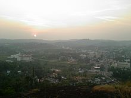
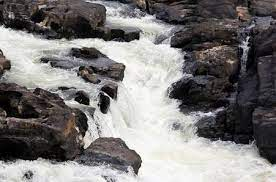

Pathanamthitta is a municipality situated in the Central Travancore region in the state of Kerala, India, spread over an area of 23.50 km². It is the administrative capital of Pathanamthitta district. The town has a population of 37,538.
Perunthenaruvi Waterfalls are waterfalls 36 km from Pathanamthitta in Pathanamthitta District, Central Travancore region, Kerala State, India. It is a popular tourist destination situated in Vechoochira Panchayat of Ranni taluk. The one shore of this waterfall is Kudamurutty and Vechoochira is the other.
Gavi's evergreen forests are abundant with wildlife including the tiger, elephants, leopards, bears, Indian gaur, sambar, barking and mouse deers, lion tailed macaque, Nilgiri langur, Nilgiri marten, Malabar giant squirrel and more than 250 species of birds.

The lush green land has been prominent as a haven of wild elephants and as an elephant training centre. The large area of thick forest with wild animals made Konni to emerge as another tourist spot for safaris and trekking. In Kerala there are two elephant training centres, the other located at Kodanad. It is located in the Adoor revenue division and it is one of the major towns situated near it.